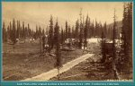
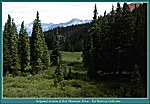
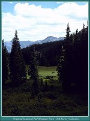
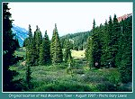
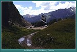
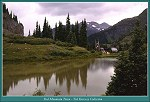
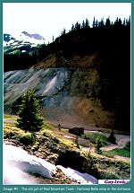
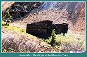
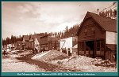
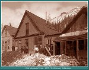

| This page has generated more comment than any other on the Narrow Gauge Circle. There are several different accounts of the rivalry between the two towns that claimed the title of Red Mountain. Sifting through them all has been very interesting. I have looked at several different versions and decided on the following account. I am sure others will disagree. It is, in my opinion, the most plausible version of the happenings more than 100 years ago. Since none of us were there, we can't say exactly what transpired |
| We must also remember that the newspaper accounts of the day cannot be taken as gospel on the subject. Many reporters wrote about places they had never been. There was also a lot of "town site promotion" occurring at the time. Many editors, in an effort to promote their town, exaggerated the facts a little. This was done to impress the surrounding towns, and to attract new business. The motive was essentially a sense of loyalty to ones hometown so we can't really fault them for it. This practice still occurs today and should not surprise anyone. |
| Red Mountain Town was first settled in 1879, when silver deposits were found nearby. First called Sky City, the town was moved from its original location a few hundred yards to the site of Rodgersville in 1886. The reasons for the move were several. Rodgersville was closer to the National Belle Mine, and Otto Mears' toll road. I think the real reason was a simpler one. The first construction began in Red Mountain Town during the dead of winter. When spring finally made its appearance, the town's residents found they had built in a very swampy area. The short move to the site of Rogersville has been confirmed by several sources. Both Ted Kierscey and Gary Lewis have confirmed this fact with the use of historical and modern photos. These following photos are included to illustrate this point. |
|
 |
This is a new view of the original location of Red Mountain Town before it was moved due to very swampy conditions at this site. It looks very similar to image M0053.
Compare this image to those that follow. October, 1883 (Image srr001 - 750k) |


|
Photograph of the original location of Red Mountain Town
before it was moved due to very swampy conditions at this site.
Compare this image to those that follow. October, 1883 (Image m0053 139k) |
|
 |
Ted Kierscey captured this image in the summer of 1997. The image lines up with the historical photo above.
(143k) |

|
 |
Ted Kierscey captured this image in the summer of 1997. The image lines up with the historical photo above.
(128k) |

|
 |
Photograph of the original location of Red Mountain Town taken by Gary Lewis in the summer of 1997.
(99k) |

| Some authors would have you believe that Red Mountain Town was originally called Congress. Congress (Red Mountain Town) was actually a different town that was located 5/10s of a mile south of the top of Red Mountain Pass where a long the present day Hwy 550. The Congress Mine was located 3/4 mile east of Red Mountain Pass. Although a number of buildings were in the area, including a large boarding house, it was never considered a city or town. Congress's (Red Mountain Town) location on the Silverton side of Red Mountain Pass, near the Congress mine site put it off the beaten path. The two towns were located very close to one another which may have fostered this conclusion. |
| Much of the confusion concerning the two Red Mountain settlements was exacerbated by the way that early newspaper accounts referred to the towns. Editors made references in their articles to "Red Mountain" leaving off the "Town" or "City" in the stories. I will concentrate on Red Mountain Town on this page and leave the history of Red Mountain City to a separate page. |
| Regardless of the above confusion over town names and locations, almost everyone in Congress and Red Mountain City ended up in Red Mountain Town. The reason was simple. Congress and Red Mountain City were both located on the wrong side of Red Mountain Pass. The lion's shares of the mineral resources were located on the Ouray side of the pass in the Red Mountain Mining District. There is one popular account that would have us believe all of the citizens of Congress moved to Red Mountain Town because a popular local establishment moved. When the Slover and Wright Saloon moved to Red Mountain Town, it is said the inhabitants naturally moved with it to be close to their tower of strength. The real reason was quite simple. Congress and Red Mountain City were located in areas that couldn't support a town any longer. |

|
Stage road Between Silverton and Ouray at Red Mountain
1889 (Image 245) (162k) |
|
 |
Ted took this photo about 200 yrds from US 550 on the road that leads to the first site of Red Mountain Town. Any idea what mine this is? (118k) |

|
 |
Ted took this photo about 200 yrds from US 550 on the road that leads to the first site of Red Mountain Town. Any idea what mine this is? (117k) |

| In 1883, the rivalry between the Red Mountain Town and Red Mountain City was at its peak. The topic of the two Red Mountain settlements was discussed on every street corner, and in every saloon. As stated above, Red Mountain City was in San Juan County on the south side of Red Mountain Pass, whereas Red Mountain Town could be found in Ouray County on the north side. During this period, the editors of the two respective camp's newspapers exchanged jabs almost weekly. Red Mountain City, on the south side of the county line, came out the loser in the battle. The U.S. Postal Service was to be the final judge in the disagreement. It was becoming increasingly difficult to get the mail delivered to the correct location when everyone addressed mail only to Red Mountain, Colorado. When the name of Congress was assigned to Red Mountain City, all was said and done. I will assume that the Postal Service decided on the name Congress because of Red Mountain City's proximity to the Congress Mine. Others suggest this name was given because one of the main streets in Red Mountain City was called Congress St. Whatever the reason, the change of names did not please the residents of Red Mountain City. The editor of the Red Mountain City newspaper responded with the following: |
|
CONGRESS CONGRESS CONGRESS is our Post Office CONGRESS is our address Arrivals are increasing every day The snow is disappearing rapidly CONGRESS, San Juan County, Colorado! We have a daily mail -- Tom Williams carries it. Another week will see a thousand more men in the district. Half of the population of Hudson Town(Red Mt. Town) is sporting women and their pimps. A good span of mules cannot pull an empty wagon over the range from Silverton to Hudson Town(Red mt. Town) by the proposed Cement Creek route." |
| In the above quotation, you will notice the editor referred to Red Mountain Town as Hudson Town. This was the case whenever he mentioned it. This is probably due to Red Mountain Towns proximity to the Hudson Mine. It seems in an effort to be sarcastic, the editor gave the name of the nearest mine to the rival town just as the postal service had Red Mountain City. In a follow up to the above he wrote: "A large number of our exchanges continue to address us at Red Mountain City and are carried to Red Mountain Town and frequently lay there a week before the thickheaded postmaster sends them back... All our exchanges will please change their addresses to "Congress, San Juan County" and thus avoid delays." |
| In the end, the spoils of this war of words went to Red Mountain Town. By 1887, only a hand full of people still lived in Congress and Red Mountain City was a distant memory. One source suggests that the only reason Congress or Red Mountain City ever existed was the greed of the merchants in Silverton. This would suggest that they wanted to get the trade of the miners in the Red Mountain District. Unfortunately for Congress and Red Mountain City, Red Mountain Town was much more conveniently located near the miners of the district. |
| In contrast, by 1890, Red Mountain Town had a population of 598 with its own telephone office, two newspapers, schoolhouse, post office, and many saloons. They had three newspapers available, and a new escape proof jail. The jail was built on bedrock, and did not have windows. I am sure one night in this jail would sober up even the most sturdy of miners after a night of entertainment gone wrong. The walls of the old jail are still standing today. This seems to confirm the stout construction of the little building. |

|
Red Mountain Town
1888 (95k) |
|
 |
This is a modern view of the old jail at Red Mountain Town taken in the summer of 1997
The remains of the National Belle Mine are in the distance on the "Knob" (102k) |

|
 |
This is a modern view of the old jail at Red Mountain Town taken in the summer of 1997
(132k) |


|
Red Mountain Town
1989 (80k) |

|
Red Mountain Town
1989 (83k) |

|
The Knob at the site of Red Mountain Town
1996 (78k) |

|
The site of Red Mountain Town
1996 (78k) |
| The former site of Red Mountain Town is found under a large outcrop of silicified rock known locally as the "Knob"'. The Knob is full of caves lined with crystals of silver bearing carbonate of lead. The largest mine in town was The National Belle. The National Belle, located in January of 1883, had ore that assayed as high as $14,000.00 per ton, and was a perpetually good producer throughout the town's lifetime. At first, the mine showed less than stunning results, but in July of 1883, miners discovered an immense cavern filled with pockets of gold and silver. Earnest Ingersoll, a reporter for Harper's Weekly, filed the following story about the discovery: |
| "A workman broke through the walls into a cavity. Hollow echoes came back from the blows of his pick, and stones thrown were heard to roll a long distance. Taking a candle, one of the men descended and found himself in an immense natural chamber, the flickering rays of the light showing him the vaulted roof far above, seamed with bright streaks of galena and interspersed with masses of soft carbonates, chlorides and pure white talc. On different sides of this remarkable chamber were small openings leading to other rooms or chambers, showing the same rich formation. Returning from this brief reconnaissance a party began a regular exploration. They crept through the opening into an immense natural tunnel running above and across the route of their working drift for a hundred feet or more, in which they clambered over great boulders of pure galena, and mounds of soft gray carbonates, while the walls and roof showed themselves a solid mass of chloride carbonate ores of silver. Returning to the starting point, they passed through another narrow tunnel of solid and glittering galena for a distance of forty feet, and found indications of other large passages and chambers beyond...It would seem as though Nature had gathered her choice treasures from her inexhaustible storehouse, and wrought these tunnels, natural stopping places and chambers, studded with glittering crystals and bright minerals to dazzle the eyes of man in after ages, and lure him on to other treasures hidden deeper in the bowels of the earth." |
| The discovery made at the National Belle Mine caused quite uproar. People came from miles around to see the wonders of these caverns. A week later, the miners found an even larger cavern. These discoveries made Red Mountain Town the talk of everyone in the San Juan area. With all these riches in need of transportation, Otto Mears converted his toll-road into a new railroad. |

|
School house
Red Mountain Town 1888 (82k) |

|
Close up view of the school house in Red Mountain Town
1888 (98k) |
| The Silverton Railroad was incorporated and began construction in 1887. Construction crews completed the line to Red Mountain Town on September 19, 1888. When the construction crews arrived in Red Mountain Town, a unique track plan was required to bring the railroad into town. Chief Engineer Charles W. Gibbs found the real estate required for a right of way at a premium. Because Red Mountain Town was located between two steep sloping hillsides, Gibbs could not install a turntable. The ground was just too hard for excavation so his final plan called for a wye to turn the trains. |
| The legs of the wye were only 150 feet long, which only allowed one locomotive and two cars to maneuver. Naturally, this made for some very interesting switching moves at times. A wye is, of course, a common feature on a railroad. What made the arrangement at Red Mountain even more unique was the location of the new depot. With the shortage of space Gibbs decided to place it inside the wye. To make matters worse, the two streams that went through town converged at this point as well. The depot was constructed over top of the streams on pilings. A wooden walk way to the outhouse was on one tail of the wye. |

|
Red Mountain Town as viewed from the Corkscrew Gulch trail. You can see the National Belle Mine ruins on the "Knob"
(106k) |
| Red Mountain Town did not have a long history. In August of 1892, a serious fire erupted in town. The fire started in the kitchen of the Red Mountain Hotel, and spread despite the brave efforts of the finest volunteer hose companies in the area. When the fire was finally put out, all of the buildings along main street near the depot were destroyed. In all, 15 structures were destroyed at the north end of town. Only the depot and jail survived the fire. Another fire on June 13, 1895, destroyed even more of Red Mountain. |
|
 |
Red Mountain Town photographed during the winter of 1891-1892. Many of these buildings where destroyed in the fire of 1893.
(image m00420)(94k) |

|
 |
Red Mountain Town photographed during the winter of 1891-1892. Many of these buildings where destroyed in the fire of 1893. I think this image was taken the same day as image M00420.
(image m00425)(115k) |

| The National Belle continued to produce until the Silver Panic of 1893 caused its closure. Many towns in the western mining districts fell victim to the abysmal silver prices brought on by the Silver Panic. By 1895, the metal prices had begun to recover but a new problem prevented the mines in the Red Mountain District from thriving. The mines had been sunk deeper and deeper with time, and as they were, high levels of under ground water were encountered. This water proved too costly to pump, and meant the mines could no longer operate at a profit. Without the mines, Red Mountain fell into obscurity. The mines were later drained by the Joker Tunnel, but by then Red Mountain Town was on its way out. By 1899, only 12 people were calling Red Mountain Town home. |

|
Joker Tunnel Boarding House
The Tunnel is just out of view 1996 (97k) |

|
Joker Tunnel Boarding House
1996 (117k) |
| Red Mountain Town is not hard to find today. The small dirt road that leads to Red Mountain Town is on U.S. Highway 550 (see map.) If coming from Ouray, drive toward the summit of Red Mountain Pass. About one-third of a mile before you get to the summit, watch for a small dirt road that leaves the pavement on your left. If coming from Silverton, continue over the pass, and after one-third of a mile, watch for a dirt road on your right. When you find this road, follow it about a one-half of a mile east to a small meadow behind the knob. The last time I was there, almost everything was gone. Take along a copy of The Rainbow Route, by Sundance Publications Ltd, and see if you can place the site of the wye and depot. |
| Those of you who think my account is all wet are invited to register your complaints at the E-Mail address at the bottom of the page. |

Mark L. Evans
Send Comments to:Mark L. Evans